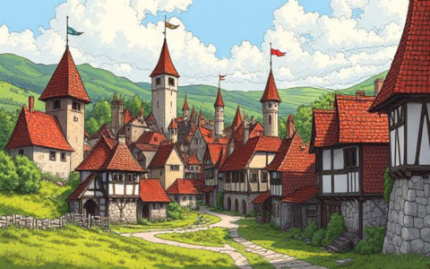

En un pueblo lejano, un niño llamado Otis, soñaba con ser un caballero y dominar el poder de la espada.
Un día, mientras jugaba en el bosque, se encontró con un dragón bebé, de un llamativo color verde, ambos se hicieron muy amigos,
Otis iba cada tarde a jugar con el pequeño dragón a un campo cercano al pueblo.
Como era de esperarse, los padres de Otis, quienes eran un par de humildes granjeros se preguntaban donde iba
su hijo a jugar todas las tardes.
Un día lo siguieron y se llevaron una gran sorpresa al ver al dragón bebé. Asustados corrieron a avisar al pueblo, el rey ordenó
la inmediata
separación de Otis y el dragón, pues los dragones eran considerados seres peligrosos y malvados, debido a acontecimientos pasados.
Es así que un día por la mañana mientras Otis ayudaba a su madre, los soldados del rey dieron búsqueda al dragón, pero no lo encontraron.
Se percataron que la madre del dragón estaba durmiendo, fue entonces cuando los soldados atacaron la madre del dragón, pensando que de esta
forma el bebé dragón desprotegido moriria.
Capítulo 2: "La mision del caballero"
Han pasado 26 años desde los acontecimientos del primer capitulo, Otis ahora siendo el caballero principal del rey siempre se preguntó que fue
del dragón bebé, pues nunca volvió a verlo.
El rey Joshimo III quien gobernaba desde hace años el reino de Monstdat, un reino lejano que tambien administraba, se enfrentaba ante
una situación delicada, pues un mensajero del reino de Monstdat le informó que un dragón estaba atacando a los aldeanos. Esto significaba
tragedia para el pueblo de Monstdat, ya que el dragon destruia tanto cultivos como ganado, llevandose por delante casas y a veces a las personas
del reino.
Esto era un problema para el rey Joshimo III, pues el reino de Monstdat era un reino muy importante para el reino de Joshimo III, ya que gran parte
de los recursos venian de ahí.
Mandó a llamar a su caballero más efectivo, Otis, para que se encargara de la situación
🤴: "Otis, mi mas eficiente caballero, te tengo una mision muy importante"
🤺: "Rey Joshimo, usted puede confiar en mis manos toda perturbación que se presente, digame, ¿Qué tengo que hacer?"
🤴: "Un dragón esta atacando el pueblo de Monstdat, destruye recursos y vidas inocentes, Es inconcebible!, tienes que matarlo"
🤺: "Entendido, mi rey, partire inmediatamente"
Capítulo 3: "Llegamos a Monstdat"

Al llegar a Monstdat sucede algo inesperado, Otis se encuentra con el dragón bebé, quien ahora es un dragón adulto, Otis lo reconoce por el color que lo diferenciaba de los otros
dragones. Otis queda paralizado ante tal descubrimiento, algo en su pecho dio una sacudida, se enfrentaba a una gran disyuntiva ante sus ojos.
El dragón con el que jugaba de niño, ahora era un ser adulto, fuerte y poderoso, estaba destruyendo el pueblo de Monstdat, pero Otis no podía olvidar la amistad que tuvo con él.
En acto de reflejo Otis desenfunda su afilada espada, cuyo reflejo en el sol cegaba a cualquiera que lo mirara. Se vio asi mismo en el reflejo de la espada
y en cuestion de segundos recordo lo que su madre le decia cuando era niño: "La amistad es un tesoro que no se debe olvidar" mientras se miraba a si mismo jugar con el dragón bebé.
Habia llegado la hora de tomar una decisión, Otis sabía que si no mataba al dragón, el pueblo de Monstdat quedaria reducido a escombros, pero Otis no podía matar a su amigo.
Pero si lo mata, mataría a su primer amigo con el que compartió momentos de felicidad en aquel campo. Sus piernas temblaban como nunca antes, ¿Es acaso está la primera vez que se sentía asi?